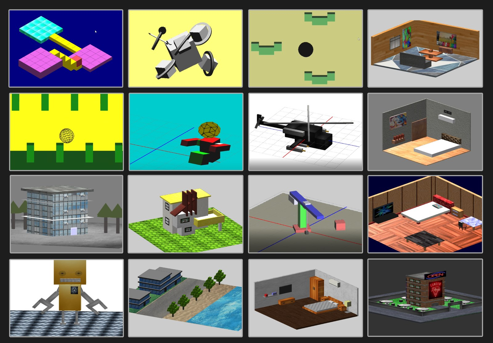

ZeecoEngine
A C++ / OpenGL engine built to expose the layers behind a real-time application—and give students a platform for graphics and simulation projects.
A small engine from frame loop to physics
01Rendering core
GLFW context, GLAD loading, shader compiler, VAO/VBO/EBO wrappers and draw paths.
02Geometry
Cube, sphere, cone, cylinder, plane, prism, pyramid, tube, lines and custom meshes.
03Scene transforms
Local/world translate, rotate and scale; parent transforms; look-at and move-towards.
04Lighting + materials
Directional, point and spot lights with camera and texture state connected through materials.
05Asset import
Recursive Assimp scene traversal, indexed meshes, normals, UVs, tangents and texture reuse.
06Physics
Static, dynamic and kinematic bodies, constraints, manifolds, ray tests and debug drawing.
07Debug UI
Dear ImGui integration plus grid, ray and line helpers for inspecting scenes.
08Experiments
Robot arm, rolling ball, sine wave, model-loading and ZeroMQ client/server work.
09Teaching platform
Students extended the engine with course scenes; contributions remain explicitly credited.
A frame makes every engine layer visible
Learning value first, production abstraction second
| Decision | Alternative | Why / trade-off |
|---|---|---|
| Build on raw OpenGL | Unity / Unreal | Expose buffers, shaders, matrices and draw calls; much more infrastructure to maintain |
| Scene-specific C++ classes | Data-driven ECS | Easy for a student to trace; hard to scale composition and lifetime |
| Assimp import | Write format parsers | One common pipeline for many formats and material textures |
| Bullet integration | Custom physics | Focus on render/physics synchronization and gameplay, not solver mathematics |
| Interleaved vertices + EBO | Duplicated triangle vertices | One coherent vertex record and reuse through indices |
| Vendored Windows project | Portable package manager | Predictable course machines then; difficult maintenance now |
From an asset file to indexed OpenGL draws
Bullet simulates; the renderer consumes transforms
An interleaved mesh, described once by the VAO
A credible foundation—and an honest legacy project
Narinder-led core
Git history establishes ownership while retaining contributor credit.
Indexed geometry
Reuse shared vertices and keep the GPU layout explicit.
Texture-path cache
Avoid duplicate decode and allocation inside an imported model.
Physics broad phase
Reject distant object pairs before contact generation.
Modernize ownership
Raw pointers and manual teardown are the first refactor target.
Uniform locations
Stop calling glGetUniformLocation from every setter and draw.
The collage includes student projects. No measured speedup or production-scale claim is attached to ZeecoEngine.